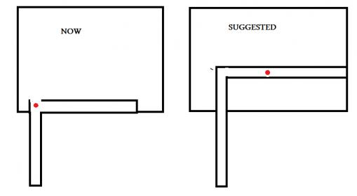

Wow, what can I say. Looks fantastic, fits in very well with the look and feel already established in the rest of the chapter, while expanding on it at the same time. Still not too sure about those archway looking gates that the APC comes out of. One minor suggestion for the garage area, maybe have some oil stains underneath the car lifts to grime it up a bit more. But otherwise, awesome work!
The massive fight at the end of the map it’s AMAZING!
Don’t have time to review it completely, so here is my impressions:
Pros:
1-It’s good to have more xen jump pad, in BM appears only once.
2-The car repair area it’s well done, car lifts included.
3-All scripted fight are lovely, especially the last one(awesome Air fight).
4-I appreciated the zombie ambush.
Cons:
1-You said that without godmode you wouldn’t make it.
Do you suck so badly or need more tweaking?
2-Computer screens in car repair?
Thank you for your kind words, I’ll address your cons quickly:
I didn’t mean I couldn’t complete the level without godmode, I simply meant I wouldn’t be able to complete it all in one go, given that I play on Hard difficulty with a skill.cfg setting which makes the aliens far tougher. It wouldn’t be particularly entertaining to watch me attempt to complete scenes three or four times, that’s just what I meant. The level is quite completable, I promise you. The scene with the 4 alien grunts coming out after you blow up the door is by far the toughest bit.
It’s just decoration, I can change it around a little. I emulated the style found in the other garage that you come across in BM, where those screens on top of the toolboxes can be found.
It’s a shame I don’t have any music I could put in. A song like Forget About Freeman from BM’s soundtrack would be awesomely fitting to my big battle at the end. I was toying with the idea of putting in some of the songs from the BM soundtrack which didn’t get used (Apprehension, Black Mesa Theme, Office Complex), but none of them really fit well. I don’t really want to use something that isn’t a BM composition either - it would make my level stand out too much.
Seriously awesome, but those garage things look pretty out of place. You should add like, extra buildings to them or something, or a wall, because right now they seem like tunnels in the middle of nowhere. Also the exploding doors need rubble or something. Other then that, fantastic! I will replay BM again just for this.
I have finished to see your video. Here is some problems I found there:
1)HL2 vehicle, columns and big parking window models. I hope that they are will be changed and columns, at least, retextured.
2)Strange geometry (like the archway looking gates) and bad or wrong texturing (like the green glass on the skylights) or strange small window frames on the parking area.
Hope all the bad things will be fixed, because you did really great work. Waiting for the next map(s)
This looks fantastic! I really hope it gets included with BM.
I agree about the vent part though. It does work a lot better when you can’t see the grunts.
Also, I’d suggest having the vent run through to about the middle of the room, where it collapses.
Something like this:
Red dot is where they shoot the vent/the vent collapses.
The strength of this scene in the original was the surprise. You were just crawling through a vent, hearing voices of soldiers who could apparently hear you, and suddenly you see shafts of light coming through bullet holes, and it collapses. If you were fast enough, you could avoid falling through the collapsed part of the vent and attack the soldiers from above, with snarks.
Which is, I believe the reason that those snarks are placed there in the original. It’s a good way to learn how to use snarks and in what situation they are the most valuable.

Thank you for your kind words. I am hoping to have debris spewing out of the doors when they are destroyed - it shouldn’t be difficult to do, I just haven’t got around to doing it yet. The garage doors have had a lot of complaints and I will try to change them as best I can.
Thank you too for your kind words. Yeah, you’re right. I will definitely test it with default skill.cfg, though I am confident it will be much the same - the HECU are normally fairly outnumbered on every encounter.
The HL2 pillars are all I’ve got, I’m afraid, as they’re model based. I’d quite happily retexture them (simple reskin, no biggie) to make them appear different but I’m not changing the models. How do you guys feel about me making/including a couple custom assets? I was very, VERY loathe to do it as I’d either have to embed them in the BSP or package them loose, which is messy. But I’ll compromise on that if you guys think it’s important. The cars on the other hand are pretty much a no go. There are about 3 destroyed car models on BM, having 10 clones of them in the car park would look ridiculous.
The green glass on the skylights was a design decision, actually - as that glass has the look of unbreakable glass. I like the way it looks, personally. I also didn’t think the frames were that bad in the parking lot. In the garage the frame is bad and I will get around to changing it. And as I’ve said, I’ve heard many complaints about the silo door areas, I will try and change them.
Again, thanks for all your criticisms/comments guys. Keep them coming, they keep me motivated!
As for my work, I’ve taken a break from C2A5G. I’ve pushed out the iteration I wanted to a great reception. Fixes to that map will come once I’ve gathered sufficient feedback. I’ve started, and am already quite far into C2A5H. I’ve almost completely finished the Alien Grunt throwing the Marine through a wall bit, and it works nicely in BM actually - really brutal.
May be yes, but soviet cars at the America… It is just stupid May be its better just to place fewer cars? You can place some car parts like the tires, axles, etc. It is will keep atmosphere.
I am aware of this, and will be changing it. I’ll also be making their flight paths a bit smoother, they’re a little jerky as it stands.
I am also aware of this, but it was a compromise I unfortunately had to make. They do fly ridiculously low, far less so than any real fighter would. But the problem is I don’t want a high skybox - it’s horrible for optimization, as all parts of the map would be able to see all other parts. So I’ve had to settle for low flying aerial vehicles to allow better optimization. Besides, the other fighter jets which you see in other BM maps also fly very low, it’s for dramatic effect. In my sequence, for example, you could just argue that it’s heavily damaged and desperately trying to shake off a pursuing fighter, so it’s flying low. It’s a decent enough explanation, even if unrealistic.
Perhaps. I’m not sure it’s something most people will notice, though. I certainly didn’t really think about it. How does everyone else feel about this? I’m loathe to have less cars - the cars being there gives the impression the park was in heavy use before the disaster struck.
Awesomejob, really good work. I don’t have the time to give much feedback right now, but from what I remember, the things I noticed could be improved were:
-Perhaps more indicators in the garage area near the beginning could help. Not a big deal
-The door you blow up with the rocket launcher could benefit from some better destruction
-Some pre-computed destruction scenes would add be awesome. I know you might have planned to add those later.
In the final battle scene, if you dont interfere with the fight, how would the aliens destroy the apc?
Thank you. That was my reasoning (“in universe explanation”) as to why they fly so low. The meta (“out of universe explanation”) is that it’s because I didn’t want a really tall skybox.
I feel the garage is fairly self explanatory. It’s not too complicated, I doubt the player will get lost for long. I put the big green signs over by the stairwell doors to help lead the player upstairs.
Yes it would, and I will work on it.
Pre-computed destruction would be amazing I agree. But I can’t model worth half a crap and it seems a little out of scope. I may attempt it when I have everything else sorted out but it is fairly unlikely anything will come of it. Although, having mentioned it now, having the helipad being blown into a million pieces by the Manta would be very, very cool.
I don’t know. All I know is that it’s happened on 3 separate test runs I’ve done where I specifically didn’t interfere in the fight. Unless it’s a recurring bug, I think the Alien Grunts can actually deal melee damage to the tank, which sorta kinda maybe makes sense, seeing as they’re supposed to be really strong. Unless it’s a bug, which is perhaps more likely.
Stellar work, really, and what you’ve accomplished in such a short time is utterly amazing. If you had been a member of the BM Dev team, maybe it wouldn’t have taken 8 years… never mind… that water’s passed under the bridge.
Along with “Surface Tension”, the “On A Rail” level also left a lot to be desired, in my view. Not to ignore how much work you have left to do with finishing up “Surface Tension”, are you considering doing something similar with reworking the “On A Rail” level as well? How did you like the way “On A Rail” turned out?
It’s just a theory at the moment and I haven’t properly tested it, but I THINK Alien Grunts can deal damage to LAVs. I don’t know about any others, but like I’ve said on some of my test runs the LAV has been destroyed without me doing anything - and with an Alien Grunt coming out from behind the wreckage every time. Maybe I’ll actually properly test that at some point.
Thank you for your good words kind sir. I have no concrete plans for OaR as of yet. The shortening of OaR was more a lack of a gameplay experience than a story one, if you get my drift. You didn’t miss much story wise from it. Though it also had some fights between the aliens and the HECU, it’s less significant I felt than in Surface Tension - the chapter directly before the HECU pull out.
So not yet. Once I’ve finished ST, which will not be for a while admittedly, I may move on to OaR. No promises.
Excellent work I think it is overall very very good.
I really like the car park the very top floor though instead of the brush based girders could do with some brush with an alpha metal frame just to keep that a little more like the original but the design of the carpark is like thats what It always should have been.
I would like to suggest that the arch doors you make similar in architecture to the Arch door you have to blow up with the TOW this architecture seems to work better with the stone work textures and sloped corners. and I also think 2 doors and two roads next to eachother is what makes them also look odd try merging two roads to one road and keep the arch heavy doors with the stone architechture and sloped corners as the only method in or out of an area as is more realistic and believable
Scripted sequences are great and the fights are great to watch what else can I say apart from great job on this and can’t wait to see more
you might have to make that a sort of building that the LAV comes through too or smashes through a metal fence perhaps as long as you can block it off somehow…or have the doors shut to stop it retreating back into the tunnel
Edit
Perhaps set the door the LAV comes through further back? And have a section of road that leads to a barricade checkpoint hut that it smashes through a barrier like others in Surface tension one of the trailing soldiers can shut the door as the LAV comes through the big doors and onto the barricade hut
The garage is great and keep it nice and open but along the wall on the left facing the booby trap doors or the far side would be good to add pile of rubber tyres and a bench with lots of tools on it lockers or metal cuboards gas cans etc with a noticeboard too some finer detail in here is needed
Founded in 2004, Leakfree.org became one of the first online communities dedicated to Valve’s Source engine development. It is more famously known for the formation of Black Mesa: Source under the 'Leakfree Modification Team' handle in September 2004.